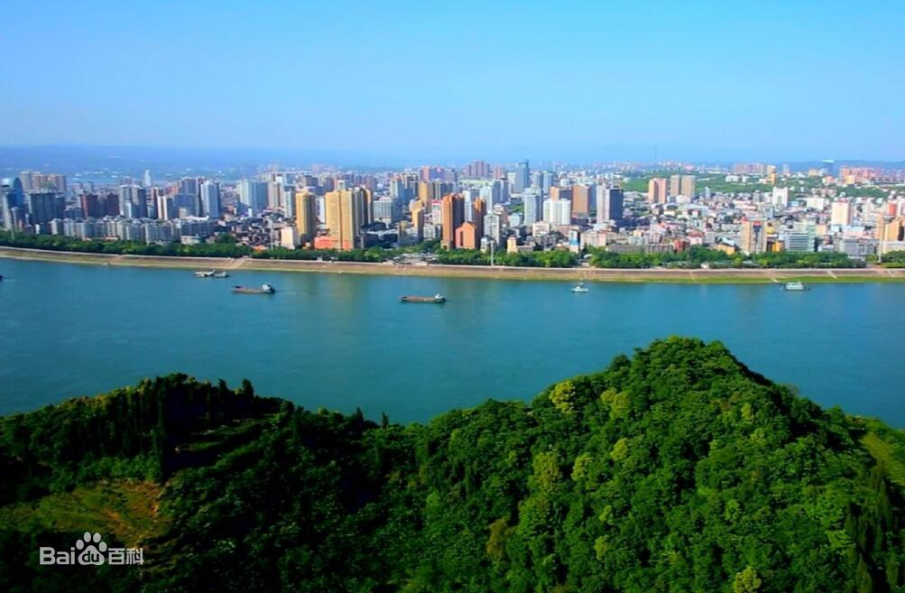
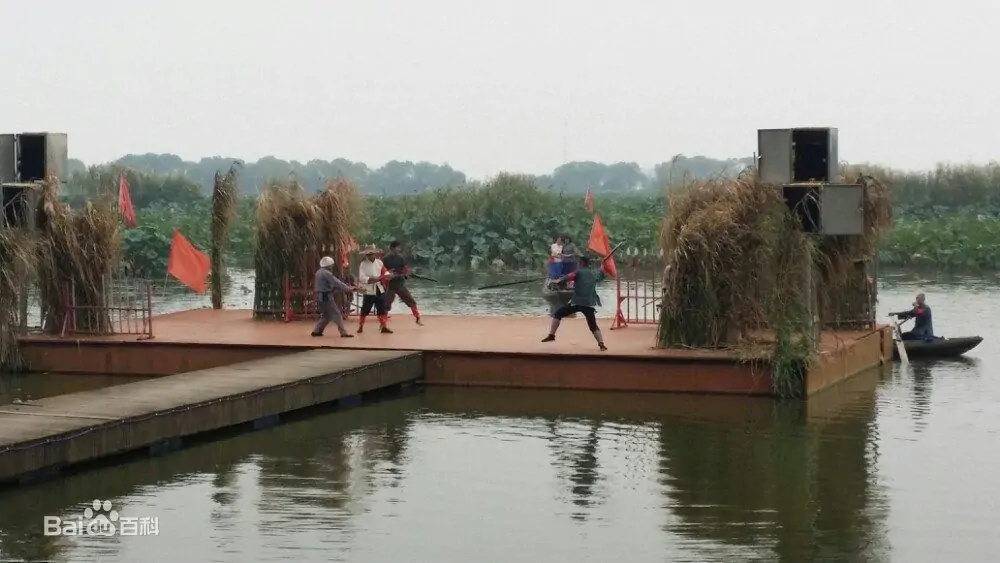
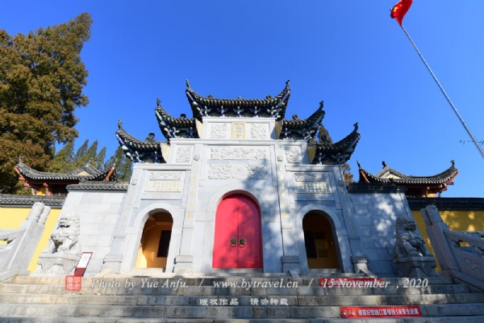

宜昌

宜昌，湖北省地级市、省域副中心城市，是国务院批复确定的中部地区区域性中心城市 [1] 、长江中游城市群成员之一 [2] ，地处中国中部、湖北西南部、长江上游和中游的分界处，素有“三峡门户”、“川鄂咽喉”之称 [4] 。全市共辖5个市辖区、3个县级市、3个县、2个自治县，总面积2.1万平方千米。截至2020年11月1日零时，宜昌常住人口401.76万人， [86] 户籍人口390.94万人。2021年，全市地区生产总值5022.69亿元。
洪湖

洪湖作为地名，其来源无确切记载。最早始见于明朝《嘉靖·沔阳志》所载：“上洪湖，在州东南一百二十里，又十里为下洪湖，受郑道、白沙、坝潭诸水，与黄蓬相通”，“夏洪湖大水，湖河不分，容纳无所，泛滥沿岸，诸垸尽没，湖垸不分”。洪湖地区海拔在23－28米之间，在明朝以前只有上、下两湖，后江西移民与当地人围湖造田，使湖泊越来越小。清朝年间，长江泛洪，洞庭湖暴汛，沔水西南多处溃决，洪水把民垸冲垮，上下湖连成了一片，形成长江边上的一个大湖，人们称之为洪湖，即洪水冲成之意。洪湖湖面最大时达749平方千米。解放后大规模的围湖造田，使湖面锐减至348平方公里。还有一种说法是，洪湖定名源自康熙。《湖北丛书》记载，1663年，康熙来古楚地寻找失踪的顺治帝，见一大湖浩渺如烟（当时长湖、三湖、白露湖、洪湖四湖连片，面积很大），问从者何湖，答曰：尚无湖名。康熙沉吟：此湖乃洪水冲成，便叫洪湖。
武穴

武穴市，是中国湖北省黄冈市代管的县级市，为武汉城市圈重要组成部分，是长江中游港口城市。全市版图面积1246平方千米。根据第七次人口普查数据，截至2020年11月1日零时，武穴市常住人口676264人。 [10] 武穴市，位于长江中游北岸，大别山南麓，鄂东边缘，地扼吴头楚尾，历来是鄂、皖、赣毗连地段的“三省七县通衢”。武穴市前身为广济县，古称“佛国”，取“广施佛法，普济众生”之意。1987年，经国务院批准，撤县建市。 武穴市拥有长江十大深水良港之一的武穴港，同时中国最长的铁路京九铁路和中国最长的高速沪渝高速出入口，在这里交汇。 武穴市拥有中国园林绿化模范县市、中国油菜之乡、湖北省工业城市、湖北省文明城市，中国武术之乡、中国科技先进市，“中华诗词之乡”等荣誉称号。2019年3月，被列为第一批革命文物保护利用片区分县名单。